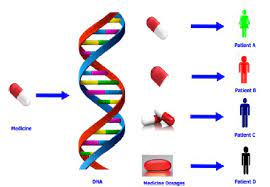
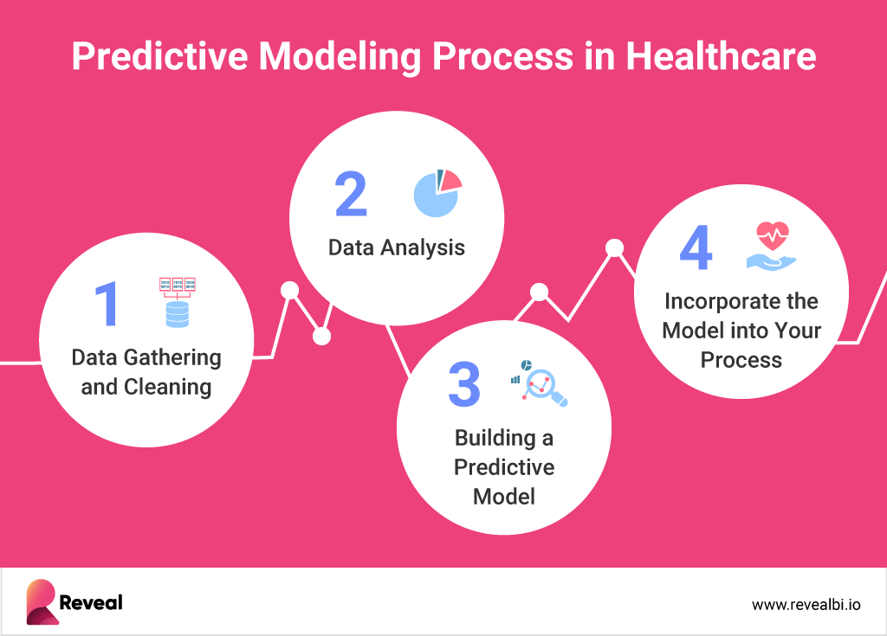
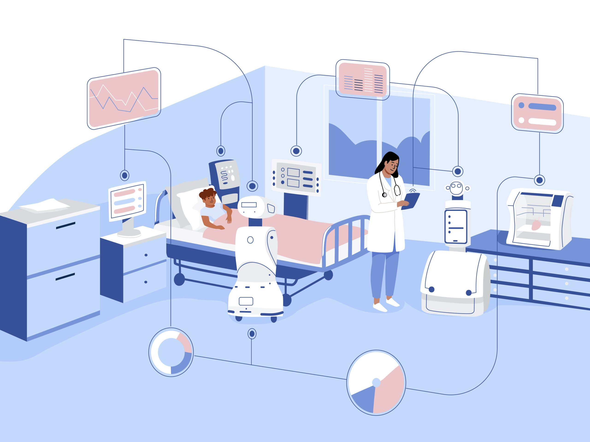

Benefits
Early Diagnostics
One of the most significant benefits of AI in healthcare is early diagnosis. AI algorithms can analyze medical data from various sources, including electronic health records (EHRs), medical imaging, and genomics, to identify patterns and abnormalities that might escape the human eye. By detecting diseases early, doctors can take prompt action to prevent or treat them, potentially saving lives.
Precision Medicine
Another advantage of AI in healthcare is precision medicine. Traditionally, a "one-size-fits-all" approach is taken towards treatment, but AI algorithms can analyze an individual's genetic makeup, lifestyle, and environmental factors to tailor personalized treatments for patients. This approach improves patient outcomes and reduces the risk of side effects.
Predictive Analytics
AI-powered predictive analytics can help healthcare organizations improve patient care and outcomes by identifying individuals at high risk of developing certain conditions. This technology can also help healthcare providers predict which treatments will work best for a particular patient.
Enhanced Patient Experience
AI tools such as chatbots can enhance the patient experience by providing on-demand support and answering common questions. Chatbots can help reduce wait times, provide virtual consultations, and offer support outside of regular business hours. This technology can help increase patient satisfaction and provide better access to healthcare services.
Increased Efficiency
Finally, AI can help healthcare organizations become more efficient by automating routine tasks such as scheduling appointments, updating medical records, and processing insurance claims. This technology can help free up healthcare professionals' time, allowing them to focus on more critical tasks such as patient care.